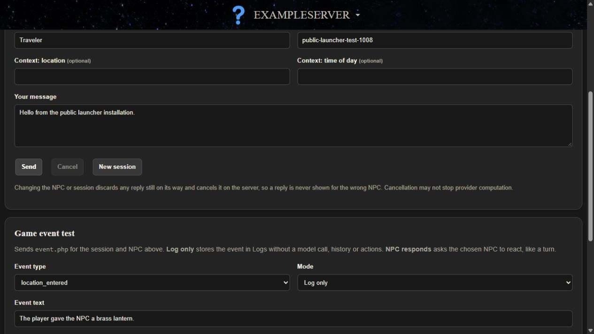

Testing
Test in mock mode first, from the dashboard and from the console client. Every request carries a request ID, so you can find exactly what happened in the server's logs.
Web Conversation Tester

- Open Roleplay > Conversation. The default session is
dashboard-demoand the NPC isnpc_guide. - Type in Your message and press Send. Try
follow me: the actions line showsfollow_player (target npc_guide). - Press New session to start fresh: shared facts still apply, and the new turn shows 0 history lines.
The tester writes ordinary history and displays actions without running them. No dashboard page runs game actions.
Game Events
On the same page, Game event test sends event.php. Mode Log only stores an event with no model call, history or actions. NPC responds makes the NPC react like a normal turn. From the client folder:
.\example_mod.exe --event location_entered "The player entered the market."
.\example_mod.exe --react item_given "The player gave a lantern. follow me"Only four types exist: location_entered, item_given, combat_started and combat_ended. The game decides when to send events; the server never triggers anything itself.
Find A Request In Logs
The client prints the ID of every request, for example Trace: turn req-... (ok). Open Control Panel > Logs, filter by Request ID, and open Details.
| Logs shows | Meaning |
|---|---|
turn complete | The server finished, not that a game ran anything. A client report appears under "Client reported (untrusted)". |
failed, llm_unavailable | The provider failed. Search the Apache error log for example-ai [<id>]. |
failed, duplicate_request | The ID was reused within a day. Use a new ID per request. |
cancelled or superseded | Expected after a cancel, NPC change, session change or checkpoint restore. |
| No row | Inconclusive: rejected before logging, a filter hides it, or another install. Read the HTTP status the client printed. |
Voice, NPC selection, embedding and memory calls appear on Control Panel > Connector calls instead.
Client Actions
The model can only ask for an action. The server returns only names in its allowed_actions, and the client runs one only if it is in its own allowed_actions and has an explicit handler. Nothing maps action names to commands.
--say "dance": reply only; the server listsdanceinrejected_actions.- Client
"allowed_actions": []:Rejected action not allowed by this mod: follow_player.
Cancellation And Stale Replies
- Set
mock_delay_secondsto 3 on Configuration > LLM. - Start the interactive client with
.\example_mod.exeand typefollow me. - Before it answers, type
/cancel,/npc scout,/unloador/session other-save.
The reply and its action are dropped and the server is told to cancel; Logs shows the turn as cancelled or superseded. In the dashboard tester, Cancel or changing the NPC does the same. Cancellation may not stop computation at the provider, and failed requests are never retried automatically.
Server check in WSL, with a mock delay of 2 or more: SMOKE_STALE=1 bash scripts/smoke.sh http://127.0.0.1:19000/ExampleServer, using your own server address. Set the delay back to 0 afterwards.
Troubleshooting
| Symptom | Check |
|---|---|
health.php 404 or 403 | Preview (19000): the folder must be /var/www/html/ExampleServer or /var/www/html/custom-mods/<id>, and sudo ddistro_custom_mod setup-web must have succeeded. Released (8081): where Apache serves port 8081 from, and your folder name. |
| Nothing answers on port 19000 | Run sudo ddistro_custom_mod setup-web. If setup-web is unavailable or rejected as an unknown command, your Core does not include the preview; use port 8081. See Ports and branches. |
setup-web says the port is in use | Nothing was changed. Choose another CUSTOM_MODS_PORT from 19000 to 19999 in /etc/dwemerdistro_services.conf, run it again, then pair again. |
500 server_not_configured | config/config.php missing, unreadable, or token still the placeholder. Run the installer again. |
503 database_unavailable | PostgreSQL running, and the database settings in the config. |
503 not_migrated | Run sudo bash scripts/install.sh again. |
Client WinHTTP error 12029 | Server not reachable at server_url. After a port change, pair again or edit server_url. |
Client 401 unauthorized | Token in config.json does not match the server. Pair again. |
Also check that Apache does not serve your Git history. 200 here means anyone who can reach the port can download it. Check port 8081 too, because it also serves /var/www/html:
curl -s -o /dev/null -w '%{http_code}\n' http://127.0.0.1:19000/ExampleServer/.git/HEAD
curl -s -o /dev/null -w '%{http_code}\n' http://127.0.0.1:8081/ExampleServer/.git/HEADWhen sharing logs for help, include request IDs and error codes, never tokens or keys.
Full reference: START_HERE.md, Troubleshooting by request ID, SETUP.md, Troubleshooting and the ExampleMod smoke checks.
Next step: Port the client to your engine.